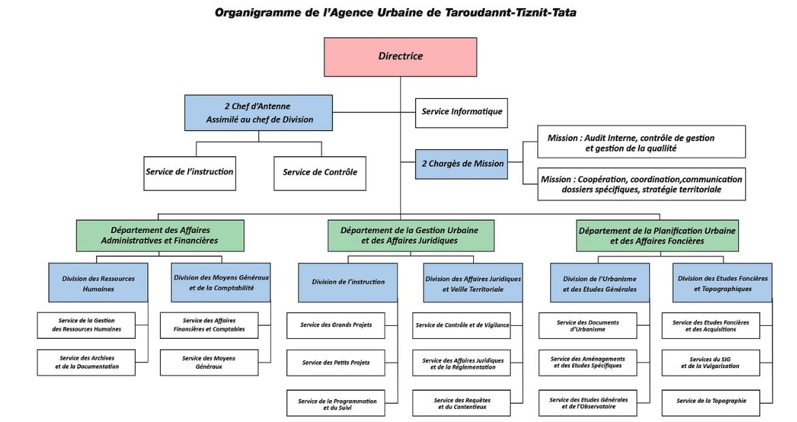
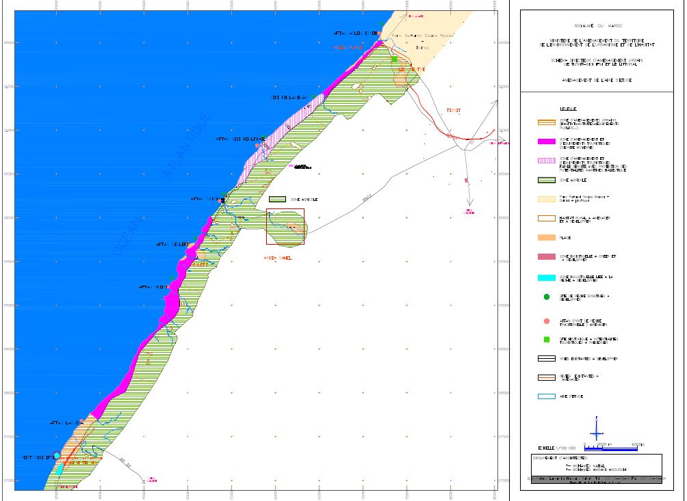

Tiznit : La perle du sud

Un coup d'oeil sur l'histoire
La ville de Tiznit doit son origine à la présence d'une source bleue . En 1882, et sur l'initiative du Sultan Alaouite Hassan 1er, quatre grands douars ont été assemblés pour créer la médina de Tiznit.
Le sultan Moulay Hassan 1er a choisi ce lieu stratégique pour implanter une caseme militaire afin de mieux contrôler les côtes du sud visées , à l'époque, par des puissances européennes.
Ahl Tiznit est à l'origine une tribu berbère. Elle est indépendante du pouvoir central jusqu'à 1882, date à laquelle Moulay Hassan Ier a soumis les tribus de la région. La création de ce poste militaire avait pour but de contrôler l'arrière pays, particulièrement la puissance maraboutique de Tazerwalt, et de protéger d'une pénétration européenne depuis l'Atlantique.
Les habitations furent réunies au sein d’une seule enceinte protectrice pour former la ville. La construction de celle-ci prit deux années de travaux financés par les revenus du port d’Essaouira. Comme tous les grands ouvrages défensifs du Maroc, l’enceinte de Tiznit fut bâtie selon le modèle des fortifications des villes marocaines. Celle-ci est une ligne de remparts de 7 km de long et 8 m de haut flanquée de tours au nombre de 56 et percée par cinq portes historiques. Les maisons sont de type traditionnel et rappellent, pour certaines, les grands riads de Marrakech. Parmi les monuments qui caractérisent la ville de Tiznit on trouve le palais du Khalifa (Qasr el khalifi) qui abritait le représentant du Sultan, la place du Méchouar et la grande mosquée.
A une centaine de kilomètres au sud de Taroudant et à l’est de Tiznit, à 1200 m d’altitude, Tafraout est située au milieu d’une région de roches de granite rose ayant subi un phénomène de désagrégation pour former des roches de formes arrondies, empilés les uns sur les autres, c’est le chef–lieu du pays des Ammeln.
Oasis de montagne, en plein pays Soussi, Tafraout s'allonge sur plusieurs vallées où fleurissent les amandiers au début du printemps. Les rochers de granite rose qui s'entassent ça et là, dessinent des formes fantastiques que l’on imagine à l’heure du couchant. Cette cité représente le chef-lieu du pays des Ameln, une tribu de berbères (Chleuh), très réputés pour leur sens du commerce. La cité dispose d’habitations conçues de façon traditionnelle, sous forme de bâtiments carrés, généralement fabriqués en pierres recouvertes d’enduit ocre rose et possédant pour la plupart, une cour centrale, une tour d’angle peu élevée et d’étroites fenêtres bordées de blanc.( site de Royal Air Maroc).
Les potentialités et les atouts de la province
Selon le découpage territorial, le champ d’application de l’antenne à savoir la province de Tiznit faisant partie de la région Souss-Massa couvre une superficie d’environ 5206,2 km², soit 9,7% de celle de la région.
Un territoire qui s'étale sur 25 communes dont le découpage est montré par la carte suivante et dont seulement les communes de Tafraout et celle de Tiznit sont urbaines .

- Population : 207 367 habitants soit 7,7% de la population régionale .
- Moyennes annuelle des températures : 25°C
- Altitude : 240 m
- Taux d'activité : 36,8%
L'economie de la province est dominé par l'agriculture (environ 30% de la population active ). Viennent ensuite la pêche , l'artisanat et le commerce . Il est à noter que le tourisme occupe une place de plus en plus importante dans la ville .
Présentation de l'AUTTT et mise en situation de l'antenne de Tiznit
L'Agence Urbaine de Taroudannt-Tiznit-Tata a été créée par le décret n° 2-13-426 du 8 Chaabane 1434 (17 juin 2013), relatif aux Agences Urbaines de Taroudannt, Berrechid, Larache et Sekhirat – Témara tel qu’il a été modifié par le Décret n° 2-17-634 du 11 Jomada akhira 1439 (28/02/2018) relatif au champ des compétences des Agences Urbaines.
La création de l’Agence Urbaine de Taroudant-Tiznit-Tata, s’inscrit dans la volonté de renforcer la politique de développement urbanistique du territoire national par le billet d’une nouvelle génération d’Agences Urbaines opérationnelles, étant acteur incontournable de l’urbanisme et du développement territorial.
Son ressort territorial correspond aux Provinces suivantes : Province de Taroudant, province de Tiznit, province de Tata.
L’Agence Urbaine de Taroudant-Tiznit-Tata est un établissement public doté de la personnalité morale et de l’autonomie financière, soumis à la tutelle technique et au contrôle financier du Ministère de l'Aménagement du Territoire National, de l'Urbanisme, de l'Habitat et de la Politique de la Ville. Ses prérogatives s’articulent autour des dispositions du Dahir portant loi n° 1-93-51 du 10 septembre 1993, et de celui des Agences Urbaines, et consistent principalement en :
- La Planification urbaine et l’encadrement du territoire par des études spécifiques ;
- La gestion urbaine ;
- Le Contrôle de la conformité des projets par rapport aux documents d’urbanisme ;
- L’Assistance et encadrements des partenaires publics et privés.
- .......
Voici l'organigramme de l'AUTTT
les missions de l'antenne de Tiznit
Comme il est montré sur l'organigramme , l'antenne de Tiznit (comme celle de Tata) est chargée essentiellement à assurer deux services , le premier est le service d'instruction et le second est le service de contrôle .
a.Le service d'instruction comme son nom l'indique est Chargé de l'instruction de toutes les demandes de construire, lotir et morceler .
b. le service de contrôle est chargé du contrôle sur pièce et sur place du respect de la réglementation des documents d'urbanisme (plans de zonage et plans d'aménagement urbain ...) et de la vérification de conformité, des projets de construction, lotissement et morcellement autorisés.
La mission de contrôle est assurée par des brigades de contrôleurs dont le travail est organisé en deux services :
Le Service du contrôle des opérations publiques.
le Service du Suivi.
Consultation des documents d'urbanisme :
Définition
Un document d'urbanisme est un document qui peut être plan, schéma, programme ou carte qui cadrent l'aménagement et l'urbanisme à l'échelle d'un territoire ou d'un pays. Il a pour objet la détermination des règles et des prévisions, opposables aux personnes publiques et privées, relatives à l'affectation et à l'occupation des sols sur un territoire déterminé.ils ont donc une importance éxtreme dans la gestion du térritoire puisqu'ils fixent le cadre et les règles de l’usage de l’espace .
vous trouverez ci-dessous qulques documents d'urbanisme de certaines zones de la province . (il suffit de cliquer sur l'image corresondante pour les télecharger) :
les plans d'aménagement de:
Voici un exemple du réglement régissant le plan d'aménagement de REGGADAle plan de restrecturation de:
- Douar Tolba
Schéma directeur d'aménagemnt urbain de:
- Tiznit , Sidi Ifni et le littoral

Demande de la note de rensigenement urbaine
Définition
La note de renseignements urbanistiques est une pièce administrative délivrée exclusivement par l'Agence Urbaine, informant le client sur l’affectation réservée à son terrain par les dispositions réglementaires prévues par les documents d’urbanisme, et le règlement d’aménagement applicable au secteur où se situe son terrain. Ce document facilite l'orientation du citoyen dans la consistance et la conception du projet à réaliser sur le terrain en question.Si vous voulez déposer votre demande , clickez sur l'exemplaire de la note afin de remplir vos rensignements

Contact
addresse
M7V7+55P, Tiznit 85000
email@gmail.com
numéro de téléphone
000000000000000000